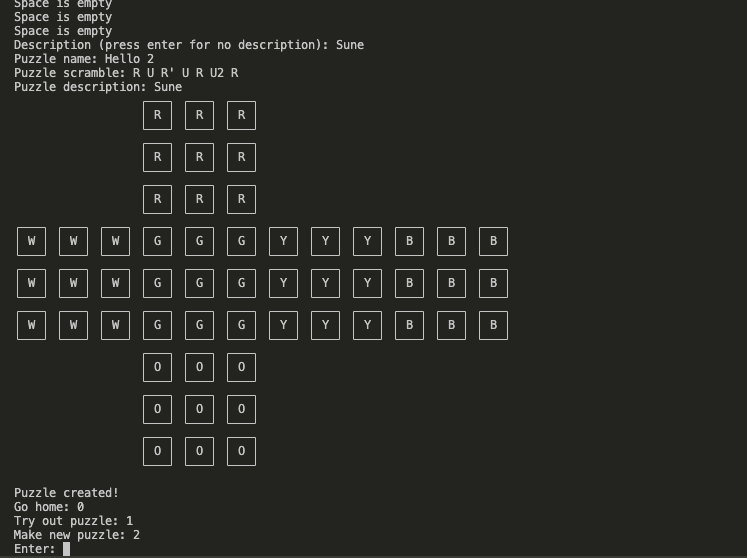

Résumé
Tim Kulchitsky
Programmer, musician, speedcuber, and amateur philosopher. Scroll through the sections for a more visual pass through my experience, projects, education, and skills.
Start Scrolling
01 / Experience
Independent Software Projects
I build small, focused software projects to practice turning ideas into useful tools. My work so far has centered on speedcubing, command-line workflows, and personal web design.
- Built command-line tools and web pages focused on speedcubing practice.
- Designed responsive pages and reusable CSS for a personal portfolio site.
- Explored C, HTML, CSS, JavaScript, and graphics-oriented interface ideas.
gcc cfop-puzzles.c ./cfop-puzzles --case f2l case generated solve, inspect, repeat
02 / Projects
CFOP Puzzles
CFOP Puzzles is a Rubik's Cube puzzle generation and solving tool. I started it because I wanted a better way to drill complex F2L cases than writing solutions by hand.
- Created the base command-line version in C.
- Focused the workflow on repeatable puzzle generation and solving practice.
- Planned a 3D cube visualization layer with GTK.

03 / Education
Computer Science Study
My learning combines coursework, self-study, and project-based practice. I am especially interested in systems concepts, algorithms, web development, and interactive graphics.
- Studying programming fundamentals, algorithms, and systems concepts.
- Practicing web development through a hand-built personal site.
- Using portfolio projects to connect theory with working software.
C
Algorithms
Web UI
Graphics
04 / Skills
Tools I Like Working With
I like the space where careful logic meets a human-facing interface: systems thinking, polished layouts, and tools that make practice feel sharper.
Languages
C, HTML, CSS, JavaScript
Tools
Git, command-line workflows, browser developer tools
Interests
Systems programming, interactive graphics, puzzle software, UI design